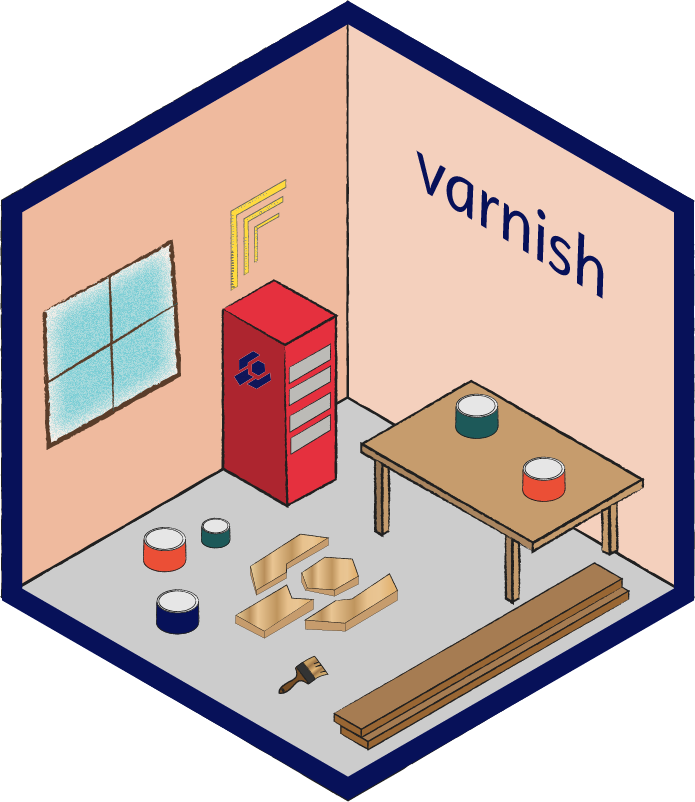

Changelog
Source:NEWS.md
varnish 0.3.0
- Lesson overview pages are now supported (reported: @zkamvar, https://github.com/carpentries/workbench/issues/65; implemented: @zkamvar, #87). These overview pages do not have a sidebar and have extra navigation back to home and the setup page in the menu bar.
- new ‘overview’ template is implemented to always contain links back to the home page.
- The
spoilerdropdown item has been implemented to allow authors to create stand-alone accordions that will hide optinal content from users without using asolutionclass (implemented: @tobyhodges, #92)
MISC
- The build process for css/js bundles is now self-contained in the node dev dependencies. Running
npm installwill install everything needed to re-compile the js and css. - The README has been updated with instructions to build locally
- An
.editorconfigfile has been added to ensure the JS content is indented properly
varnish 0.2.18
- Non-math elements on the same line will no longer be treated as math (reported: @marklcrowe, #88; fixed: @zkamvar, #90)
- Bold italic text will now render correctly (reported: @marklcrowe, #89; fixed: @zkamvar, #91)
varnish 0.2.15
- The Carpentries Lab logo has been updated (reported: @tobyhodges, #59; fixed: @tobyhodges, #76)
- The size for large logos are now capped at 64px so contributors do not need to force their logos to a particular size when exporting SVG (fixed: @zkamvar, #76)
varnish 0.2.14
- Workbench Beta Phase
Edit on GitHublinks no longer redirect people to the beta phase intermediate page during the second stage of the beta phase.
varnish 0.2.13
- Table display CSS is set to
tableas opposed toblock, thus ensuring it is represented correctly in the accessibility tree (see https://developer.mozilla.org/en-US/docs/Web/CSS/display#tables). (fixed: @zkamvar, #74) - Table headings are now bold to easily distinguish from table contents.
- Collapsing the sidebar no longer results in extra room at the bottom of the page.
varnish 0.2.12
- Table formatting has been fixed to no longer include 100px padding in the first row (reported: @marklcrowe, #72; fixed: @zkamvar, 4385602)
- All tables will now be striped for accessibility
varnish 0.2.10
- Fix issue with bullet points in callouts being mis-aligned (reported: @sstevens2, #68; fixed: @zkamvar, #69)
varnish 0.2.7
- Lessons in different phases of the workbench beta phase will now have the URLs redirect to a site that explains the purpose of the phase.
varnish 0.2.6
- For lessons that use
workbench-beta: true, the feedback URL has changed from https://github.com/carpentries/workbench/discussions/ to https://carpentries.typeform.com/to/KRBl4IZM, so that we can get more specific feedback.
varnish 0.2.5
- Workbench Beta messaging has been modified to be more visible and to link back to the original lesson if possible.
- The icon for lessons in “alpha” has been updated so it has a yellow background with a grey glyph so that the icon shows up better.
varnish 0.2.4
- Callout block titles have been improved: The underline height for titles have been fixed to not look wonky when titles have multiple lines (reported: @anenadic, #53; fixed @zkamvar, #55). Moreover, the text transformation will no longer affect
codeandkbdelements. - Heading element sizes have been recoded to use relative units. There was not enough specification in the original CSS to properly distinguish between H3 and H4 elements; moreover, on tablet and mobile devices, the H1 heading looked smallter than the H2 heading due to a copy/paste error. This has been fixed by using relative calcualtions (@zkamvar, #55)
- Sidebar navigation now says “Episodes” instead of “Expand” when collapsed so that it is less confusing for folks. (suggested by @drmowinckels, https://github.com/carpentries/workbench/issues/16 (#47); fixed by @zkamvar, #56)
- The collapsed sidebar label no longer reverts to saying “collapse” on a new page.
- The hamburger menu for mobile devices now has a border so it’s more clear that it is a menu (suggested by @drmowinckels, https://github.com/carpentries/workbench/issues/16 (#47); fixed by @zkamvar, #57)
varnish 0.2.3
- Add support for displaying anchor links (requested @fiveop, https://github.com/carpentries/sandpaper/issues/285 and @anenadic, https://github.com/carpentries/workbench/issues/28; added: #54 by @zkamvar)
varnish 0.2.2
- Formatting of list elements in the solutions and instructor notes now follows the same formatting as the rest of the content (reported: #51 by @tobyhodges, fixed: #52 by @zkamvar)
varnish 0.2.1
- The sidebar navigation in mobile and tablet views now includes all the information that was included in the navigation bar for the desktop mode. (reported: https://github.com/carpentries/workbench/issues/16#issuecomment-1165307355 by @Athanasiamo and #49, fixed: #50 by @zkamvar)
varnish 0.1.16
- CHAPTERS has been temporarily renamed to EPISODES to reduce cognative load between the webpage and the source folders
varnish 0.1.14
- indicators for lesson development stage (pre-alpha, alpha, beta) have been added as
<abbr>elements with a link to the appropriate section in the CDH andtitleelements that describe the purpose of the stage. Visually hidden text follows the<abbr>element for users who can not perceive the lesson visually (#39 by @zkamvar, reviewed by @tobyhodges). - FIX: .lesson-title and .lesson-title-md are now inline-block elements
varnish 0.1.13
- An alert for the workbench beta phase is implemented if the lesson has
workbench-beta: truein theconfig.yaml.
varnish 0.1.12
- dropdown navigation no longer is hidden by the sidebar on XXL screens; z-index of
nav.bottom-navset to 3. (reported: #35 by @brownsarahm, fixed: #36 by @zkamvar)
varnish 0.1.8
- custom workbench engines are now properly linked in the footer via the
sandpaper_cfgpegboard_cfg, andvarnish_cfgvariables. - code of conduct link now points to the
CODE_OF_CONDUCT.mdfile so authors can update or modify their own code of conduct (NOTE: all Carpentries lessons MUST have a code of conduct that links to the Carpentries Code of Conduct as well as the reporting guidelines.
varnish 0.1.5
- The index page now has specific sections for schedule and setup that link to the
#scheduleand#setupanchors. This partially addresses https://github.com/carpentries/sandpaper/issues/260
varnish 0.1.4
- Removed ” logo” suffix from the logo elements, as it is redundant https://webaim.org/techniques/alttext/#logos
varnish 0.1.2
- Add matmo analytics in the footer (@fmichonneau, #17)
varnish 0.1.0
- Breaking change; moving from the carpentries/styles theme to the new theme developed in 2021. Variables and layouts have changed significantly, so this package gains a significant update.